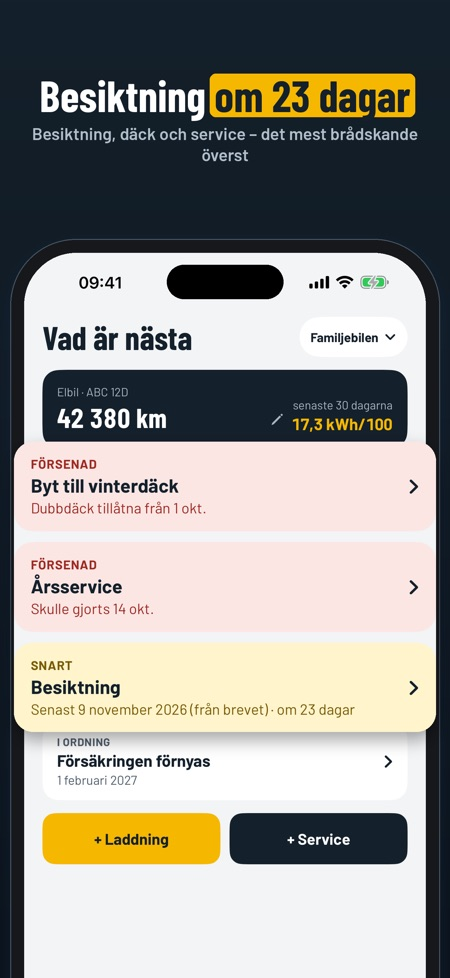
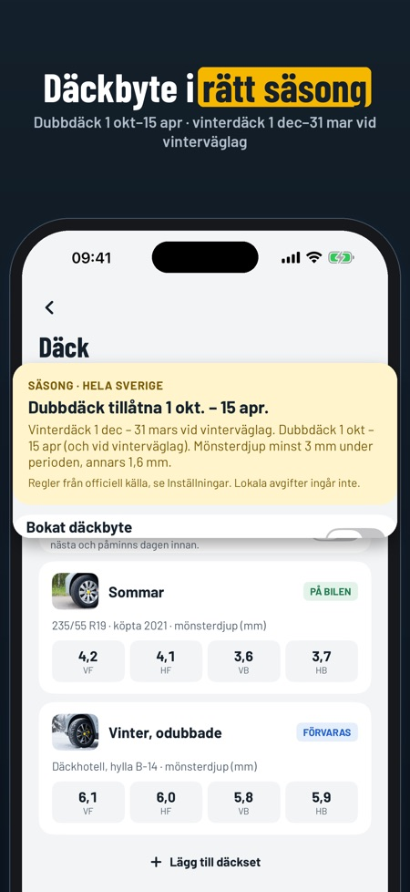
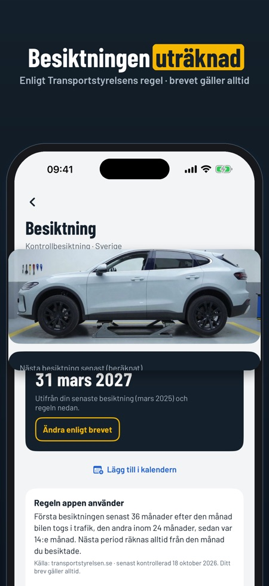

Servicebok, tankning, laddning. Vinterdäck krävs från 1 december vid vinterväglag. Bilboken visar när däckbytet gäller dig, nästa besiktning och vad bilen kostar.



Vet du när nästa besiktning ska göras? Bilboken räknar ut den från registreringsbeviset och Transportstyrelsens regel – och påminner om däckbyte och service. Hela historiken följer med tills du säljer bilen.
VAD ÄR NÄSTA
• Besiktning, service, däckbyte, försäkring och fordonsskatt på en skärm, det mest brådskande överst
• Påminnelser före datumen
BESIKTNING
• Nästa besiktning räknas från månaden bilen togs i trafik och Transportstyrelsens regel (36, 24, sedan 14 månader)
• Står det ett annat datum i brevet? Skriv in det – brevet gäller alltid
• Checklista före besiktningen, och datumet direkt i kalendern
DÄCK
• Dubbdäckssäsong och vinterdäcksperiod
• Bokat däckbyte på däckhotellet, med påminnelse dagen innan
• Sommar- och vinterdäck med mönsterdjup per hjul och var de förvaras
• Varning när mönsterdjupet är under kravet
BRÄNSLE OCH LADDNING
• Liter eller kWh, pris och mätarställning
• Förbrukning per 100 km eller per mil, räknad från full tank eller full laddning
• Mätarställningen kan inte gå bakåt, och appen frågar om en siffra ser fel ut
• Uppdatera mätarställningen direkt från startsidan
SERVICE OCH KOSTNADER
• Servicebok med verkstad, vad som gjordes, pris och skannat kvitto
• Nästa service enligt ditt eget intervall i km eller månader
• Kostnader per månad och kategori, och kostnad per km
SÄLJRAPPORT OCH DOKUMENT
• Hela historiken som PDF till köparen, med kvitton om du vill – och dolda priser om du vill
• Se rapporten med dina egna poster innan du köper
• Registreringsbevis, försäkringsbrev och garanti skannade och samlade per bil
• Export av alla poster som CSV
SÄKERHETSKOPIA
• Spara allt som en fil och flytta det till en ny iPhone – utan köp
• Påminnelse när det var länge sedan förra kopian
Inget konto och ingen registreringsnummersökning: du lägger in bilen själv, och allt sparas i telefonen.
PRIS
En bil, logg, kvitton, besiktning, däckpåminnelser och säkerhetskopia kan användas utan köp. Fler bilar, kostnader och diagram, delning av säljrapporten, dokument och CSV låses upp med ett engångsköp. Ingen prenumeration.
Reglerna kommer från Transportstyrelsen, Statens vegvesen, Færdselsstyrelsen och Traficom, med källa och datum i appen. Bilboken är fristående och inte knuten till dem. Kontrollera alltid brevet du får.